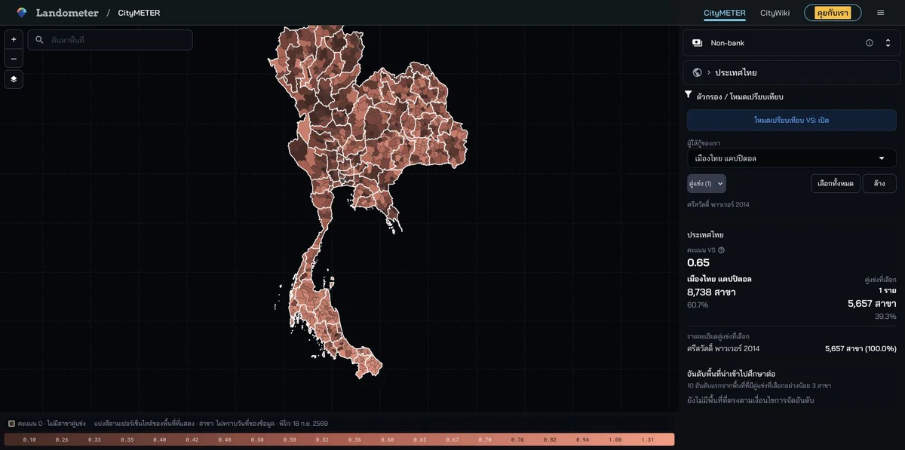

CityMETER · Location
เครือข่ายสาขาและสำนักงาน Non-bank
เห็นเครือข่ายสาขาและสำนักงาน Non-bank เพื่อเข้าใจภูมิทัศน์ผู้ให้บริการก่อนเลือกพื้นที่สำรวจตลาด
เปิดข้อมูลบนแผนที่ ↗
แยกประเภทจุดบริการ ก่อนนับเครือข่าย
สาขา สำนักงาน สำนักงานใหญ่ และบริษัทมีความหมายต่างกัน การแยกหน่วยเหล่านี้ช่วยให้เปรียบเทียบการกระจายบริการได้ตรงโจทย์ แล้วค่อยใช้ข้อมูลใบอนุญาตประกอบการตรวจผู้ให้บริการแต่ละราย
ไม่พบการจับคู่ใบอนุญาตไม่ได้แปลว่าไม่มีใบอนุญาต จำนวนสาขาไม่ใช่ยอดสินเชื่อหรือความต้องการกู้
ลองเริ่มจากสองคำถามนี้
- ผู้ให้บริการแต่ละรายมีสาขาและสำนักงานอยู่บริเวณใด?
- พื้นที่ไหนควรลงสำรวจเครือข่ายบริการเพิ่ม?
ดูพื้นที่ที่คุณสนใจต่อ
เลือกพื้นที่แล้วตรวจประเภทจุดบริการ สถานะ และใบอนุญาตกับผู้ให้บริการ
อ่านต่อจากต้นทาง
แหล่งอ้างอิง ช่วงเวลา และขอบเขตข้อมูล
แหล่งเฉพาะทาง
- ผู้เผยแพร่ข้อมูล
- กรมพัฒนาธุรกิจการค้า / สำนักงานเศรษฐกิจการคลัง / ธนาคารแห่งประเทศไทย ตามบทบาทข้อมูล
- ที่มา
- แฟ้มสาขา DBD รองรับรายการสาขา; สศค. รองรับสำนักงานพิโก; ธปท. รองรับข้อมูลใบอนุญาตที่จับคู่ด้วยชื่อบริษัท ไม่ใช่ทะเบียนชุดเดียวกัน
- ช่วงเวลาของข้อมูล
- แฟ้มสาขา DBD ไม่ทราบวันข้อมูล; พิโก 18 กันยายน 2569; ใบอนุญาต ธปท. 23 กันยายน 2569
- พื้นที่ครอบคลุม
- ผู้ให้กู้ที่มีในแฟ้มสาขา และสำนักงานพิโกที่มีข้อมูลอ้างอิง
- ระดับรายละเอียด
- แยกสาขา สำนักงาน สำนักงานใหญ่ บริษัท และประเภทใบอนุญาต; พิกัดบางรายการยังไม่ครบ
เมื่อจะนำข้อมูลไปเปรียบเทียบหรืออ้างอิง
ไม่พบการจับคู่ชื่อหรือชิปใบอนุญาตไม่ได้แปลว่าไม่มีใบอนุญาต หมวดใบอนุญาตซ้อนกันได้ จำนวนสาขาไม่ใช่ยอดสินเชื่อ ความต้องการสินเชื่อ หรือความเสี่ยงหนี้
ร่วมพัฒนาโดย
 เคนSoftware development
เคนSoftware development

สแกนเพื่อเปิดข้อมูลนี้ใน CityMETERเปิดข้อมูลบนแผนที่ (เปิดแท็บใหม่)
แชร์สรุปนี้
ส่งให้คนที่กำลังศึกษาเรื่องนี้ด้วยกัน